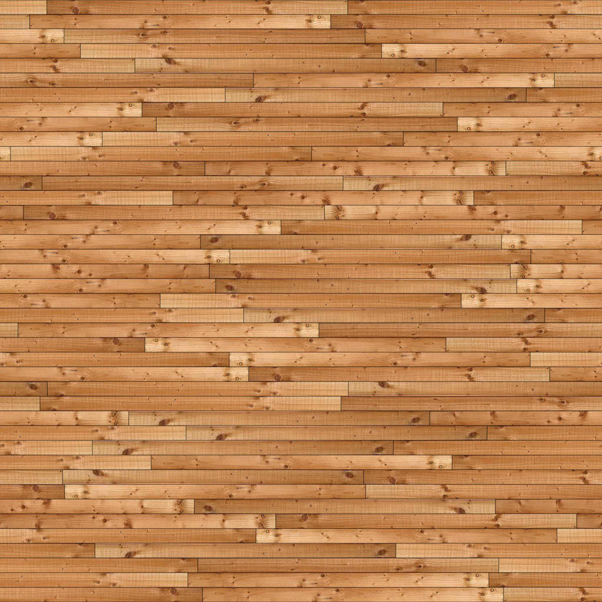
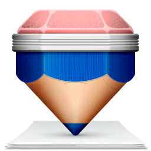

 
Movement Controls are arrow keys, a,z,s,x,d,c,f,v
supersampling++
supersampling--
Aliasing: 1
Turn Jitter False
Recusion Depth++
Recursion Depth--
Depth: 2
Add area light
Point Light0 true
Point Light1 false
Point Light2 false
Now Controlling Camera
Change Texture
SwitchScene
Raytrace
Please use a browser that supports "canvas"
Please use a browser that supports "canvas"
#used for the webgl preview # #anything shared between both raytrace.js and webgl.js is put here #